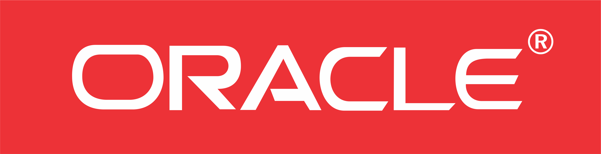
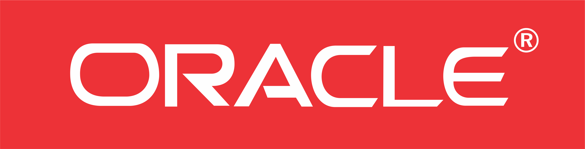

SMK Telkom Malang adalah pelopor Sekolah
menengah
kejuruan pertama di Indonesia di
bidang Teknologi dan
Informatika.
Berpengalaman dari tahun 1992 yang telah
terakreditasi "A" dan mempunyai standart
mutu ISO
9001:2008.


Kami mempunyai dua program studi unggulan yang banyak dicari oleh industri-industri di dunia IT.

Mempelajari seluruh aspek produksi software seperti aplikasi website, aplikasi android, maupun aplikasi dekstop.
Mempelajari cara merakit dan instalasi komputer, instalasi jaringan Local Area Network (LAN) dan Wide Area Network (WAN).
Banyak kompetisi di bidang IT maupun non-IT
yang banyak diraih oleh siswa-siswi SMK Telkom
Malang. Segala prestasi tersebut sangat
membanggakan sekolah dan dapat menjadi
bekal untuk meraih masa depan yang gemilang.

Ikuti terus informasi dan berita-berita terbaru tentang SMK Telkom Malang.
Anda juga bisa mengikuti informasi tentang SMK Telkom Malang di media sosial
Beberapa agenda kegiatan SMK Telkom Malang.
Dukungan dari berbagai pihak.
 



Pelopor SMK bidang Teknologi dan
Informatika di Indonesia. Berpengalaman
dari tahun 1992 yang telah terakreditasi
"A" dan mempunyai standart mutu
ISO 9001:2008.